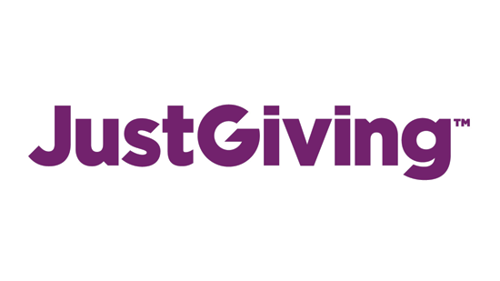

Current Working Projects:
-

- SETA – ubiquitous data and service ecosystem for better metropolitan mobility
- The objective of the SETA project is to provide effective solutions for intelligent and sustainable mobility i.e. the smarter, greener and more efficient movement of people and goods. SETA will provide a radical change from transport as a series of separate modal journeys to an integrated, reactive, intelligent, mobility system. It will provide always-on, pervasive services to citizens and business, as well as decision makers to support safe, sustainable, effective, efficient and resilient mobility. The project lasts 3 years, with €5.5M of funding from EU Horizon 2020 of which €1.2M is for Sheffield. Professor Ciravegna is the project director (2016-2019).
-

- One You Active 10 Walk Tracker
- This project aims to address adults inactivity by creating a free app to motivate and measure how much brisk walking you are doing throughout the day and highlights how many continuous chunks of 10 minutes – known as Active 10s you achieve. The project is funded by Public Health England (PHE). I'm one of two major developers working on Android tracking app and Amazon Web Services (AWS) cloud based data collection infrastructure.
- Move More App
- This project is to help Sheffield become the most active city in the UK by 2020. The app aims to stir some healthy competition. The app is designed to collect and reward even the smallest burst of exercise by counting our Move More Minutes of activity. This makes it easy for anyone to get involved in the challenge, regardless of fitness level. I'm one of two major developers on Android tracking app and university private cloud based data collection infrastructure.
Past Projects:
-

- SPEEAK-PC – Sustained Process Excellence through Embedding of Analytics and Knowledge Management into Process Chain
- This project directly addresses the challenge for organisations to realise actionable knowledge from an ever increasing flood of potentially valuable data. Currently, the need for skilled ‘data scientists’ is a major bottleneck in this regard. The project will apply existing and develop new technologies to create an ICT tool set which alleviates this bottleneck through provision of a collaborative platform with tools for data integration and analytics deployment which are accessible to non-ICT specialists. The project is funded by Innovate UK, start date 1.10.2014 and has a length of 18 months. I'm the of major contributors and chief executive to document and knowledge management packages. Please see one of the deliverables - SPEEAK-PC Terminology Recognition, accessible via the [link].
- WeSenseIt – Citizen Water Observatories
- WeSenseIt (www.wesenseit.eu) is a multi-site, multi-disciplinary project involving researchers and industrial partners in web technologies, environment, sensing, as well as social media monitoring. Working together with the EU and our sister projects this project aims to develop a new concept of citizen observatories of water creating a two communication channel between authorities and citizens in cooperating to monitor rivers, covering water quality to flooding.
- Lodie,Web Scale Information Extraction via Linked Open Data
- The linked open data information-extraction (LODIE) project, funded by EPSRC, focuses on the study of IE models and algorithms able to perform efficient user-centered web-scale learning by exploiting linked open data (LOD). I joined the LODIE team in final exploitation stage.
- 
- JustGiving
- This is an industrial project collaborated with JustGiving data science team, aiming to apply artificial intelligence algorithms to knowledge mining and user/cause recommendation.